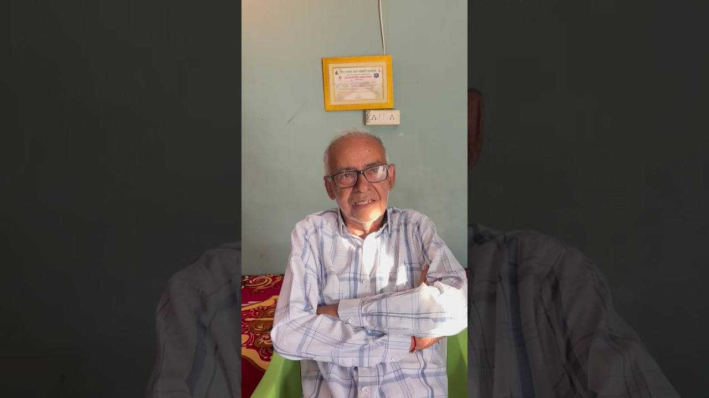

लोकसंकल्प मंच
सफलता कहानी मंच
परिवर्तन की प्रेरक कहानियाँ
सामाजिक परिवर्तन केवल विचारों से नहीं, उदाहरणों से भी आगे बढ़ता है।
जब कोई परिवार अपने आयोजन को नशामुक्त बनाता है, जब कोई शिक्षक अपने विद्यालय से नई पहल शुरू करता है, या जब कोई व्यक्ति नशा छोड़कर फिर से खड़ा होता है, तो वह अनुभव पूरे गाँव के लिए रास्ता बन जाता है। यही अनुभव इस मंच पर एकत्र किए जाते हैं।
ध्यान दें : इस मंच पर किसी व्यक्ति की पहचान उसकी सहमति के बिना साझा नहीं की जाती। कहानी का उद्देश्य किसी को दोष देना नहीं, बल्कि दूसरों को साहस देना है।
श्रेणियाँ
कहानियाँ
नीचे दी गई कहानियाँ मंच की संरचना दिखाने के लिए हैं। वास्तविक कहानियाँ गाँवों, विद्यालयों और परिवारों से मिलने के बाद, सत्यापन और सहमति के साथ यहाँ जोड़ी जाएँगी।

सभी कहानियाँ प्रतीकात्मक हैं। किसी वास्तविक व्यक्ति, परिवार या गाँव का उल्लेख नहीं है
आपकी बारी
अपनी कहानी साझा करें
आपके गाँव, विद्यालय या परिवार में जो अच्छा हुआ है, वह किसी और के लिए रास्ता बन सकता है। कहानी लंबी होना ज़रूरी नहीं। सच्ची होना ज़रूरी है।
कहानी में यह चार बातें अवश्य लिखें
- समस्या क्या थी? शुरुआत में स्थिति कैसी थी।
- परिवर्तन कैसे आया? किसने क्या कदम उठाया।
- क्या परिणाम मिले? गाँव या परिवार में क्या बदला।
- दूसरों के लिए क्या संदेश है? आप क्या कहना चाहेंगे।
कृपया किसी व्यक्ति के बारे में ऐसी बात न लिखें जिससे उसे शर्मिंदगी हो। नाम तभी लिखें जब उस व्यक्ति की सहमति हो।
कहानी भेजने का प्रपत्र
धन्यवाद, साथी!
आपकी कहानी हम तक पहुँच गई है। ग्राम/वार्ड समिति या समन्वयक द्वारा सत्यापन के बाद इसे सफलता कहानी मंच पर प्रकाशित किया जाएगा।
कहानी पढ़ी : अब अगला कदम आपका
हर कहानी किसी एक संकल्प से शुरू हुई थी।